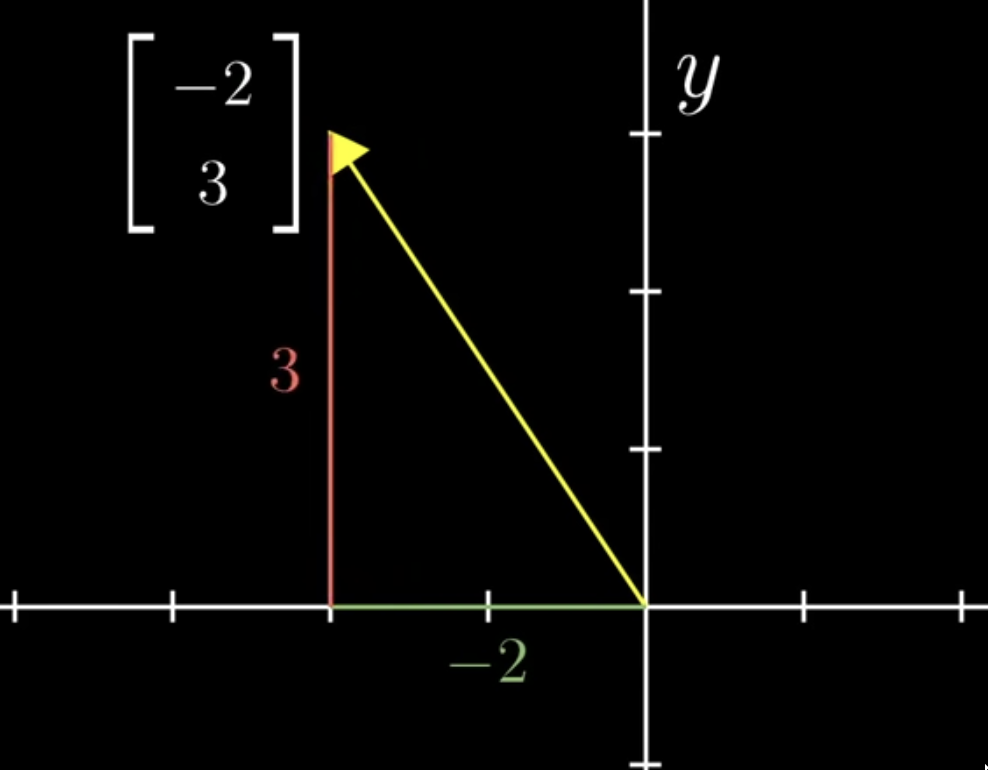
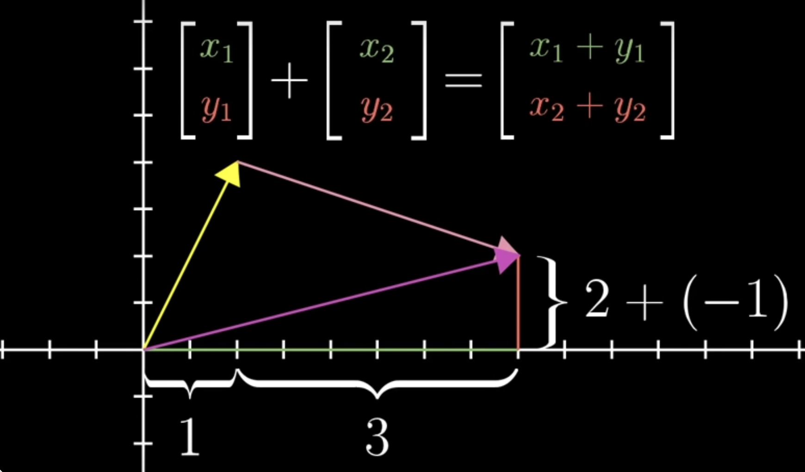
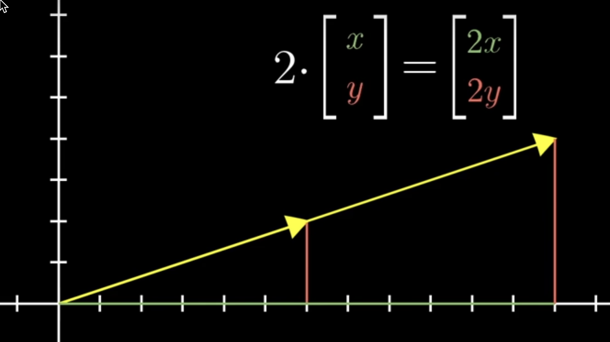
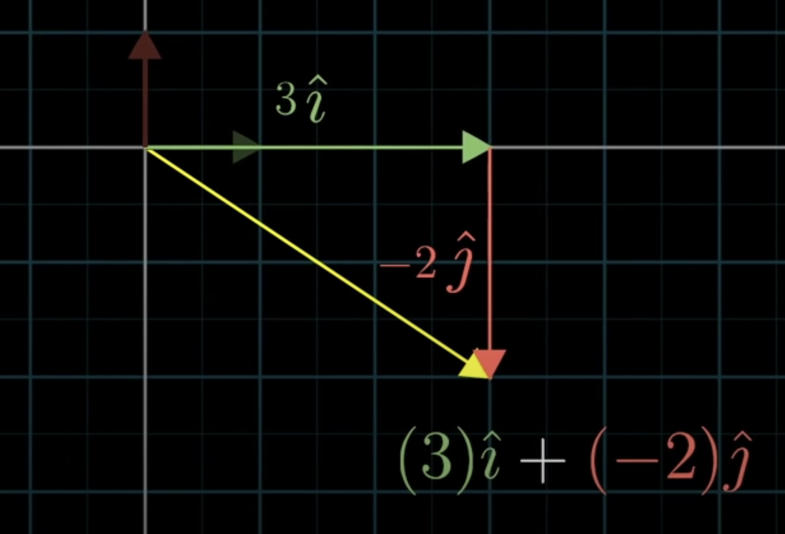

Linear Algebra Questionverse
Chapter 1
1. What is scaling? What is a scalar? What is a vector?
The act of either extending/stretching or contracting/squishing something is known as scaling, and the amount it is changed, is given by a number, which is known as a scalar, which denotes that it scales something. This scaling can also change the direction.
A vector is a list of numbers in some space, where the dimension of space is the number of elements in the vector representation. For example, if the vector is represented by a pair of numbers, than it lies in 2D space, where we can show it as an arrow, with it tail always at the origin and head pointing at the co-ordinates by which the vector is being represented, here the pair of numbers.

2. How do you add two vectors? What is its physical significance?
To add two vectors, we do component wise addition of both the vectors, and the requirement to add both the vectors is that they must be in same system, like both the vectors must be represented as pair of numbers, or triplets of numbers, or some n-collection of numbers.
\(eg: [a,b,c] + [x,y,z] = [a+x, b+y, c+z]\)
The physical significance of adding two vectors, can be understood as, the combined movement of both the vecors.
Here the first vector is represented as moving along a units on the x-axis, b units parrallel to y-axis, and finally c units alongs the z-axis. When this is added to the second vector, it is the combined movement along each axis, which is a units on x-axis and than moving x units again on the x-axis, similarly first moving b units on y-axis and further moving y units parallel to y-axis and finally moving c units along z-axis and than moving z units along the z-axis.
This entire movement is equal to moving a+x units on x-axis, b+y units parallel to y-axis and finally c+z units along the z-axis.
Hence adding two vectors is equal to just adding the vectors corresponding components.

3. How do you mulitply a scalar with a vector? Think of an application.
When we multiply a scalar with a vector, it either expands/strech out the vector by the scalar(‘number’) it is being multiplied or contracts/squished the vector if the scalar is between 0 and 1.
Also, if the vector is multiplied by a negative scalar, the vector change it’s direction by 180°, which means the vector now go in opposite direction and also is extends or contracts by the scalar value which is being multiplied.
In mathematical terms, scalar multiplication is just multiplying each component of the vector with the scalar value.

The scalar multiplication can be used to estimate one variable as scalar multiplication of other variable. For example if we have a vector of weights of a person, and if we know the relation between weight and height of a person(where \(height = \alpha * weight\)), than we can represent the height of all persons as the scalar multiplication of the weight vector with \(\alpha\).
Chapter 2
4. What is \(\hat{i}\) vector and a \(\hat{j}\) vector. Why are they important?
The \(\hat{i}\) vector is a unit vector, having the length 1, along the x-axis and similarly \(\hat{j}\) is a unit vector in the y-direction.
So, now with this two vectors, we can represent any vector (x,y), by thinking as the x-coordinate of the vector, that scales the \(\hat{i}\), stretching/contracting by a factor of x. And similarly the y-cordinate of the vector as the scalar that scales the \(\hat{j}\) vector by a factor of y.
And the final vector is the resultant of adding those two sclaed vectors. In this sense, the vectors these co-ordinate (x,y) desctibe is the sum of two scaled vectors \(\hat{i}\) and \(\hat{j}\).

5. Why not consider any other basis vectors instead of the standard unit vectors?
The standard unit vectors can be used to easily generate any vector in its vector space, where the first co-ordinate of the vector is just the scalar multlication of the first standard basis vector(x-axis), and second co-ordinate is scalar multiplication of second standard basis vector and so on.
Any vector can be represented by any set of random basis vectors, but the linear combinations in the cartesian system will be difficult to identify, since those random basis vectors are itself having some x and y co-ordinates value, which directly multiplying with scalar doesn’t give the co-ordinates of the new vector.
6. How can one get any vector from the basis vectors? What is the intuition?
Since, the basis vectors are linearly independent and the linear combinations of the basis vectors span the entire the space, we can generate any vector.